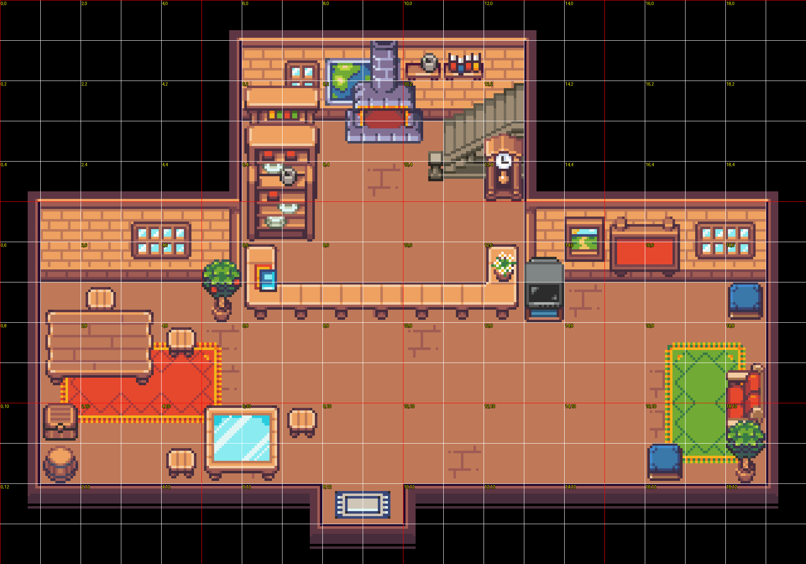

montertradebase (20×14 tiles, mỗi ô 32px)Cổng vào ở tile (8,12)-(9,12) nối về lobbytrade. Bạn nhìn ảnh dưới, rep lại kiểu "đặt ở (x, y)" — ví dụ (10, 8) — mik sẽ thêm NPC trao đổi đứng yên ở đó.
File gốc: assets/maps/montertradebase.json | NPC hiện tại: chưa có file .npcs.json riêng (sẽ tạo mới khi bạn chốt).

Lưới đỏ mỗi 5 ô, số vàng x,y mỗi 2 ô.